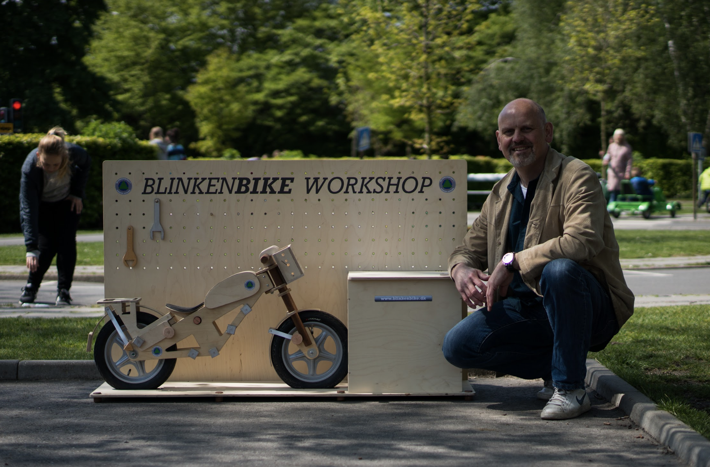

Historien om Blinkenbike 
Ideen bag Blinkenberg startede tilbage til den gang Nikolajs søn var omkring 1 år gammelt og rendte rundt efter ham under renovering af deres sommerhus. Herved startede det med at han byggede legetøj ud af træ, som sønnen kunne lege med samtidig med at Nikolaj kunne få ro til at bygge videre på sommerhuset.
Ideen bag Blinkenbike kom så ved at stifteren Nikolaj Blinkenberg Willadsen, går meget op i at ting er funktionelt også selv om det er design.
Herved blev Blinkenbike hurtigt fra en ide til et produkt, som er et design, funktionelt og brugbart.
